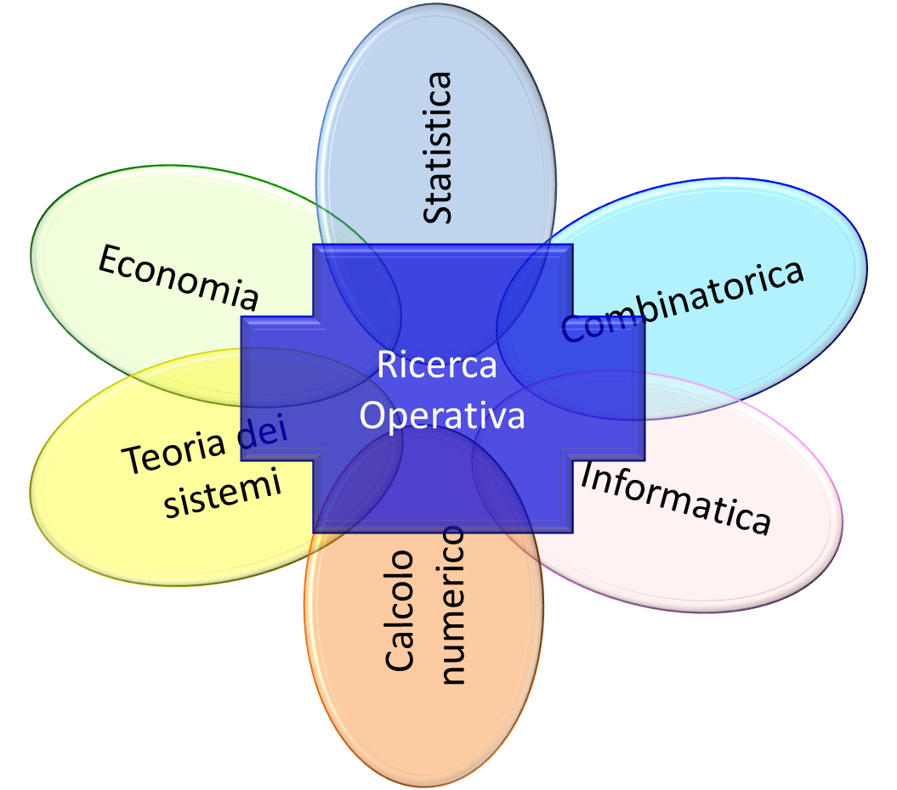

|
L’arte della guerra non solo ha influenzato menti di grandi scrittori e generali, le strategie che troviamo espresse nel libro hanno anche
una certa affinità con la ricerca operativa ovvero una branca della matematica che è in stretta relazione con moltissime altre discipline,basti pensare alle numerose teorie in cui viene applicata,
come per esempio la teoria dei giochi(problemi di decisioni in condizioni competitive) o la teoria delle scorte.
Viene dunque applicata in moltissimi altri campi come la logistica, i trasporti, la finanza, la progettazione industriale o le telecomunicazioni.
La ricerca operativa è una disciplina che fornisce elementi quantitativi di base necessari per le decisioni. Inizialmente si sviluppò in ambito militare in Inghilterra attorno al 1939, non essendo sufficienti le strategie belliche, i militari si rivolsero ad un gruppo di scienziati con conoscenze e competenze diverse. Bisognava ottimizzare la distribuzione delle apparecchiature radar su tutto il territorio in modo che fosse efficiente la localizzazione, l’intercettazione e il rientro a terra dei velivoli. Al termine del conflitto le nuove metodologie furono rivolte alla ricostruzione ed ad altri campi soprattutto nel settore industriale dove i gruppi predisposti per la ricerca operativa si occuparono di risolvere problemi connessi alla pianificazione e alla programmazione industriale.Le tecniche della ricerca operativa arrivarono in Italia con dieci anni di ritardo, nel 1961 venne creata l’AIRO(Associazione Italiana di Ricerca Operativa) avente lo scopo di promuovere studi teorici ed applicazioni pratiche della disciplina.  La ricerca operativa permette di operare le scelte migliori per raggiungere un obbiettivo rispettando vincoli che sono imposti dall’esterno e non sono sotto il controllo di chi deve compiere le decisioni, si compone di cinque fasi: 1) Formulazione del problema 2) Raccolta delle informazioni 3) Costruzione del modello matematico 4) La risoluzione del problema 5) Il controllo del modello e delle soluzioni ottenute Nella formulazione del problema il gruppo riceve informazioni generali che rielaborate gli permettono di determinare gli obbiettivi da raggiungere e i rispettivi vincoli che potrebbero limitarli. Dopodiché avviene la raccolta delle informazioni che deve essere più ampia e dettagliata possibile, le informazioni ottenute andranno poi esaminate e elaborate in modo da individuare tutte le possibili variabili. Ora sarà possibile costruire un modello matematico, che è un insieme di simboli ed espressioni che debbono rappresentare il problema in maniera semplice,chiara e precisa, di solito contiene una funzione detta funzione obiettivo l’insieme dei valori che possono essere assunti viene detta regione o area ammissibile. Utilizzando i tradizionali metodi della matematica otterremo la cosiddetta soluzione ottima che è un elemento dell’area ammissibile che rende minima o massima la funzione prefissata. Infine bisogna verificare se il modello teorico rappresenta la realtà e valutare se la soluzione ottimale ottenuta produca veramente i benefici aspettati. Prima dell’avvento della RO, l’unica possibilità era affidarsi al buon senso di persone guidate dall’esperienza che stabilivano regole“ad hoc” di base che dovevano essere seguite per risolvere i problemi A questo tipo di approccio si contrappone la RO, il cui contributo centrale consiste nell’introduzione del cosiddetto approccio modellistico-ottimizzatorio per la soluzione di un problema di decisione. |


©Powered by Samantha Mangeruca